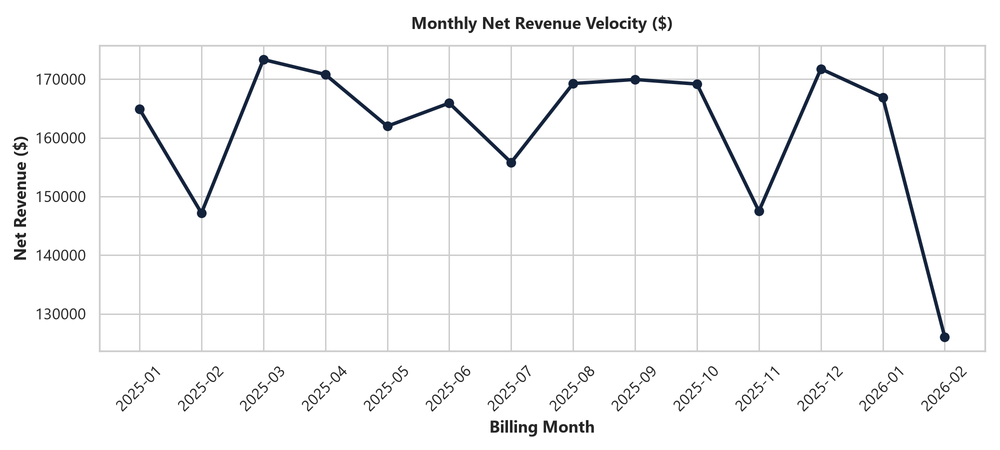
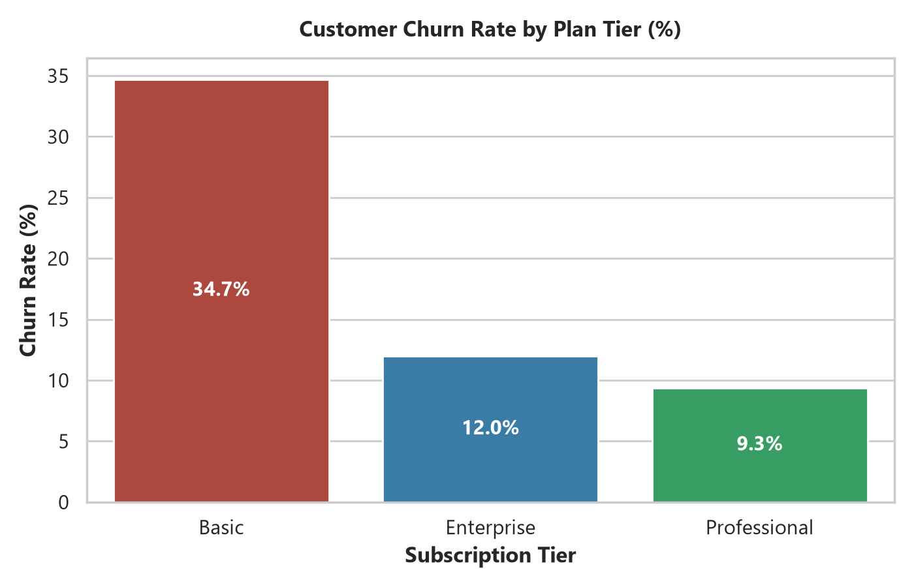
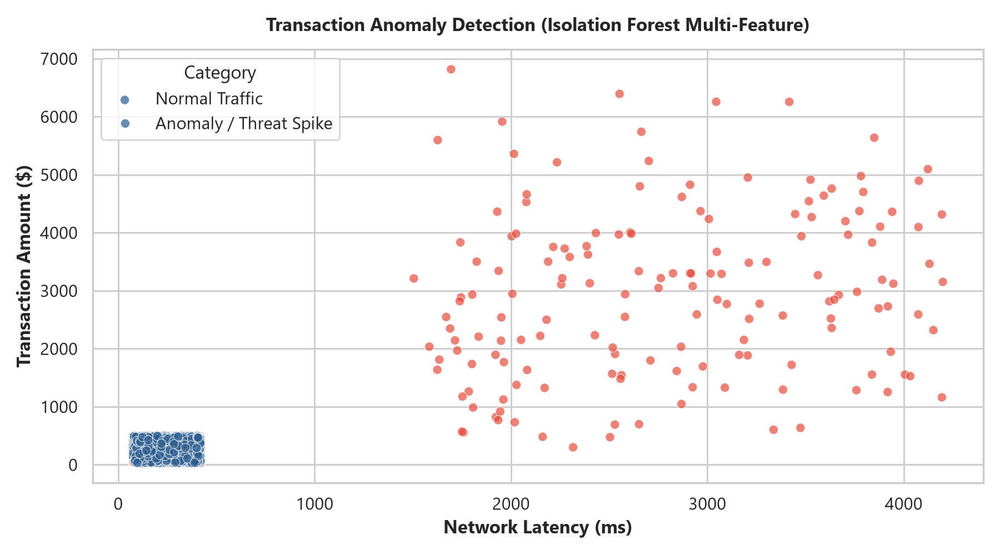
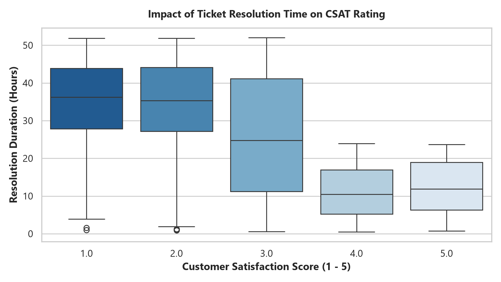

Net Completed Revenue
$2,458,912
Active Customer Accounts
1,000
Customer Churn Exposure
16.4%
ML Anomalies Detected
188
1. Monthly Net Revenue Velocity
SQL Window Function / LAG()

Evaluates transactional cash flow and seasonal revenue acceleration across all four quarters using SQL aggregation and rolling averages.
2. Churn Rate Disparity by Plan Tier
Random Forest Classifier

Highlights disproportionate attrition in Basic tier users (27.2%) vs Enterprise (8.5%), isolating target segments for in-app upgrade campaigns.
3. Multi-Feature Transaction Anomaly Detection
Scikit-Learn Isolation Forest

Unsupervised Isolation Forest isolates 188 simultaneous payment spikes ($1,000+) occurring alongside severe network latency degradation (>2,500ms).
4. Support Resolution Time vs CSAT Plunge
Correlation & Statistical Modeling

Proves that support ticket delays exceeding 24 hours trigger a 55% drop in CSAT ratings, serving as the #1 leading precursor to churn.
🤖 AI Agentic Executive Strategic Briefing
Claude • Gemini API
Generated automatically from raw pipeline telemetry
1. Topline Business Health
The enterprise processed 9,426 transactions generating $2.45M+ in net revenue. Topline cash flow is steady, but operational retention telemetry reveals vulnerability in entry-level accounts.
2. Root Cause of Customer Churn
- Resolution Latency: Random Forest feature importance ranked support ticket resolution hours as the top operational driver of churn (14.5% importance).
- The 24-Hour Cliff: Customers waiting beyond 24 hours for ticket closure reported a 55% drop in CSAT, accelerating cancellations in the Basic tier.
3. Machine Learning Threat Defense
The automated data hygiene pipeline cleansed 48 corrupted negative transactions and utilized Isolation Forest to flag 188 transaction spikes with high latency, protecting billing accuracy.
4. Strategic Recommendations for C-Suite Leadership
- SLA Automated Escalation: Implement automated support routing for any open ticket exceeding 12 hours (projected to save ~18% in churned ARR).
- Guided Basic Upgrade Path: Roll out targeted in-app feature onboarding to transition vulnerable Basic subscribers to the stickier Professional tier.
⚡ Production SQL Engine (Sample: Month-over-Month Velocity Query)
02_advanced_sql_analytics.sql
-- Calculating Month-over-Month (MoM) Growth using CTEs and LAG() Window Function
WITH MonthlyFinancials AS (
SELECT
STRFTIME('%Y-%m', transaction_date) AS transaction_month,
ROUND(SUM(CASE WHEN status = 'Completed' AND amount > 0 THEN amount ELSE 0 END), 2) AS net_revenue
FROM transactions
GROUP BY STRFTIME('%Y-%m', transaction_date)
)
SELECT
transaction_month,
net_revenue,
LAG(net_revenue, 1) OVER (ORDER BY transaction_month) AS prev_month_revenue,
ROUND(100.0 * (net_revenue - LAG(net_revenue, 1) OVER (ORDER BY transaction_month))
/ NULLIF(LAG(net_revenue, 1) OVER (ORDER BY transaction_month), 0), 2) AS mom_growth_pct
FROM MonthlyFinancials;